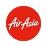

Enterprise production systems
I maintain Infineon's engineering database systems across worldwide environments, resolve low- to critical-priority incidents in Remedy and deliver change requests through Octane.
Open to work · actively looking for a full-time role
I work as a System Engineer, Data Engineer, Web Developer, Data Analyst and Data Scientist.
IT System Engineer (Master Data Developer) at Infineon Technologies, keeping worldwide engineering data accurate with Oracle PL/SQL, ETL, C# .NET and weekly releases. As a freelancer, I take websites from the first sketch to a live, Google-indexed launch.
Muhammad Naqiudin bin Noor AffandyBSc Computer Science (Data Science), UKM
I'm a detail-oriented Data & Software Engineer with a First Class degree in Data Science from UKM and 2+ years in industry. At Infineon I support large-scale enterprise systems used across worldwide sites. Outside the office I design and build websites for real businesses and events, handling every step from requirements to go-live. Here is what I bring to a team:
I maintain Infineon's engineering database systems across worldwide environments, resolve low- to critical-priority incidents in Remedy and deliver change requests through Octane.
As Software Release Manager I run weekly Jenkins releases across DEV, INT and PROD, keeping deployments stable for the people who depend on them.
KNIME automation halved handling time on repeat tickets, SAP data work streamlined a workflow by 30%, and data cleaning at TM R&D lifted data quality by 90%.
Requirements, UI/UX, development, UAT, configuration, SEO and Google Search Console. I have done every step myself on three live websites.
CGPA 3.70 with Dean's List for six semesters, Microsoft-certified in Azure Data Fundamentals and Power BI Data Analyst, plus three HackerRank certifications.
Malay, English and Indonesian. I work directly with users, engineers and clients, and explain systems with documentation, UML diagrams and workflow visuals.
Six areas where I can help a company or a small business work better and be found online.
Keep business-critical systems healthy: incident handling, change requests, release management and configuration across DEV, INT and PROD.
Reliable data you can trust: Oracle PL/SQL packages, ETL and data warehousing, SAP data migration, cleansing, de-duplication and validation.
Turn raw data into decisions: Power BI dashboards, KNIME automation and Excel reporting that tell managers a clear story.
Predictive models and computer vision with XGBoost, Random Forest, LSTM and YOLOv8, from data cleaning to evaluation. AI agents help me deliver faster.
Full-stack websites and web apps with Next.js, React and TypeScript, admin and booking systems, C# .NET MVC features, REST APIs and fast vanilla JavaScript sites.
Help customers find and trust a business: Figma design, mobile-first UX for every age, Google Search Console, sitemaps, structured data, custom 404 pages and speed tuning.
I don't just write code. I own the whole journey, so clients and teams get something that works on day one and keeps working after launch.
Websites and systems built for real businesses and events, planned, designed, built, tested and launched by me.
Bilingual (Malay / English) website for eight family homestays in Melaka, with house pages, galleries, SEO, sitemap and Search Console set up. Guests enquire straight to WhatsApp.
Secure admin system for the same business: bookings with double-booking checks, house calendar, payments and refunds, PDF receipts, housekeeping alerts and CSV reports.
Catering website with event packages, food gallery, reviews and an enquiry form that prepares a WhatsApp message. Domain, Search Console and sitemap configured for launch.
Mobile-first wedding invitation with RSVP, countdown, maps and calendar, plus a Live Gallery where guests snap photos, add frames and post to a shared wall, with an admin dashboard.
Enterprise, internship and university work. Internal company systems are described without screenshots.
 Breast Cancer Prediction (HoverNet)UKM final year project · PyTorch, Django
Breast Cancer Prediction (HoverNet)UKM final year project · PyTorch, Django Face Mask Detection (YOLOv8)Computer vision · OpenCV, Flask
Face Mask Detection (YOLOv8)Computer vision · OpenCV, Flask Angular & REST API PlatformWeb app · Angular, JWT, RxJS
Angular & REST API PlatformWeb app · Angular, JWT, RxJSMain highlights first. Tap “More details” to read every responsibility.
Infineon Technologies
Jul 2025 – 2026 · Melaka, Malaysia
Self-employed · client websites
Sept 2025 – May 2026 · Melaka, Malaysia

AirAsia · Khazanah K-Youth Employment Programme
Apr 2025 – Jun 2025
TM Research & Development
Sept 2024 – Jan 2025
Highlighted skills are the ones I use most today.
Bachelor of Computer Science (Hons) Data Science
CGPA 3.70 · First Class Honours
Dean's List for 6 semesters
Sept 2021 – Jul 2025
Physical Science (Module 2)
May 2020 – May 2021
From hot-air balloons over Cappadocia to temple gates in Tokyo, new places keep me curious. Watching how signs, transport and shops guide people in an unfamiliar city reminds me why clear, simple design matters, and I usually come home with fresh ideas for the next thing I build.
Available for full-time roles
Recruiters: I'm actively looking for a full-time role in data, systems or software engineering. References are available on request.
Businesses: I take on website and data projects from the first meeting to go-live.